UTEC · Concept Lab · Proyectos e Infraestructura Académica
Aplicativo de
Sistema para reservar, bloquear y controlar el uso de los laboratorios de la universidad.
David Lazo — Responsable Jr., Concept Lab · julio de 2026
Atajos privados: ← → navegar · F pantalla completa · S notas del orador · Esc vista general. — Buenos días y gracias por el espacio. Les presento el aplicativo de reserva de espacios que desarrollé para Concept Lab como parte de mis objetivos. Voy a mostrar qué hace, cómo está construido, y conversar sobre su escalabilidad y seguridad.
Agenda de la sesión
Lo que veremos hoy
01
Funcional
Recorrido en vivo de las funcionalidades para cada rol.
02
Técnico
Arquitectura, tecnología y documentación del sistema.
03
Escalabilidad y seguridad
Cómo crece a toda la universidad y cómo protege los datos.
Estructura alineada a los pasos propuestos por la Jefatura de Soluciones TI.
La sesión sigue exactamente los pasos que planteó la Jefatura de TI: primero las funcionalidades en vivo, luego la parte técnica, y cerramos con escalabilidad y seguridad.
Contexto
El problema y la solución
Hoy
Reserva manual y dispersa (Affluences, correos, hojas)
Sin control real del uso presencial
Sin datos para tomar decisiones
La solución
Plataforma web única para labs y aulas : reservar, bloquear y controlar
Check-in por QR : valida el uso presencial realDashboard con analítica para decidir
Modela la jerarquía real: Facultad → Depto → Lab → Responsable
Horario académico integrado : clases, ciclos y calendario
Hoy la reserva es manual y dispersa: Affluences, correos, hojas. No hay control real del uso ni datos para decidir. La solución integra reserva, bloqueo y control en una sola plataforma, con check-in por QR y un dashboard. Y modela la jerarquía real de UTEC.
Usuarios
Roles y su alcance
Admin / Coordinador
Gestión total: laboratorios, reservas, bloqueos y dashboard
Director
Los laboratorios de su departamento
Responsable de Lab
Solo su(s) laboratorio(s) asignado(s)
Docencia
Aulas, cursos y horario académico (no gestiona labs)
Docente
Solo consulta: calendarios y disponibilidad (no reserva)
Estudiante
Reserva un espacio y hace su check-in
El sistema tiene siete roles. Admin y Coordinador comparten la gestión total de laboratorios. El Director ve los de su departamento, y el Responsable solo los suyos. Docencia es el counter académico: gestiona aulas, cursos y el horario de clases — no toca laboratorios. El Docente nace automáticamente al importar el horario y solo consulta: ve calendarios y disponibilidad pero no reserva. Lo importante: los permisos se validan en el servidor, no solo ocultando botones.
Parte 01
01
Funcionalidades
Recorrido de la plataforma, pantalla por pantalla.
Entramos a la parte funcional. Voy mostrando pantalla por pantalla y luego lo vemos funcionando en vivo.
Acceso Login con Google institucional
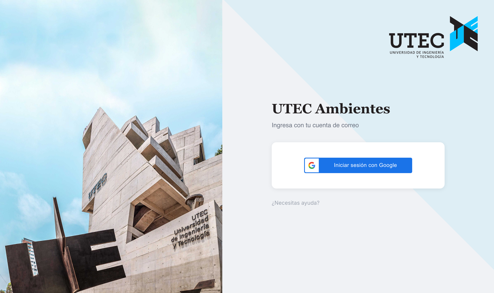
Pantalla de acceso
Solo cuentas @utec.edu.pe
Sin contraseñas nuevas que administrar
El sistema asigna el rol automáticamente
Token seguro (JWT) tras validar con Google
Qué decir: El acceso es con la cuenta institucional de Google, solo dominios arroba utec punto edu punto pe. Sin contraseñas nuevas que administrar; el sistema asigna el rol automáticamente.
Términos (por si preguntan):
Google OAuth2 : el alumno entra con su cuenta @utec ("Iniciar sesión con Google"). Google confirma su identidad; nosotros nunca vemos ni guardamos su contraseña.JWT (JSON Web Token) : tras validar con Google, le damos un "carné digital" firmado que acompaña cada petición para saber quién es, sin re-loguearse.Access token (15 min) y Refresh token (7 días) : el primero es de vida corta para operar; el segundo renueva el acceso sin pedir login de nuevo.
Posibles dudas:
¿Y si alguien no es de UTEC? → No puede entrar: se valida el dominio @utec.edu.pe.¿Se puede usar el SSO de UTEC? → Sí, está diseñado para integrarse con el inicio de sesión institucional.
Estudiante Reservar un laboratorio
1. Elige el laboratorio y su recurso: mesa, PC o equipo especializado 2. Elige la hora y la duración 3. Agrega los correos de los participantes 4. Confirma y recibe correo automático 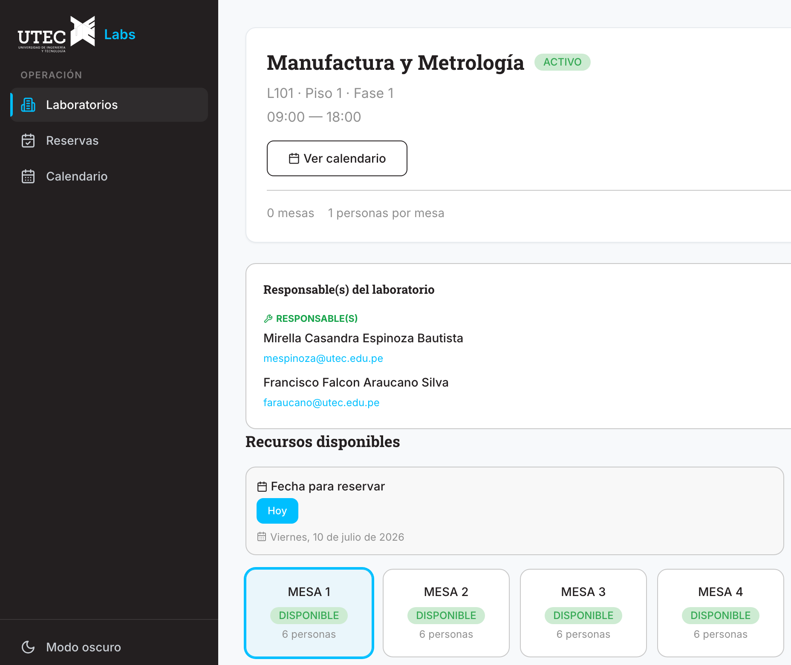
1–2 · Lab y recurso (verde = disponible) 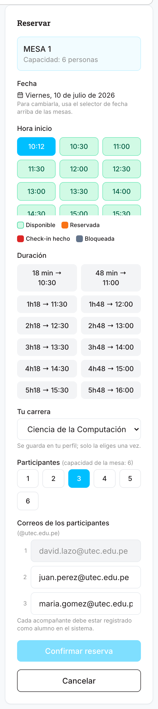
3–4 · Hora, duración y correos
Así reserva el alumno. Primero elige el laboratorio y dentro el recurso —una mesa, un PC o un equipo especializado, en verde los disponibles—. Luego elige la hora de inicio y la duración en la grilla. Después agrega los correos de sus participantes: el primero es él mismo (titular) y los demás son sus acompañantes, que deben estar registrados. Confirma y recibe un correo que le recuerda hacer el check-in. Aquí vemos el flujo completo en un ejemplo real.
Diferenciador Check-in por código QR
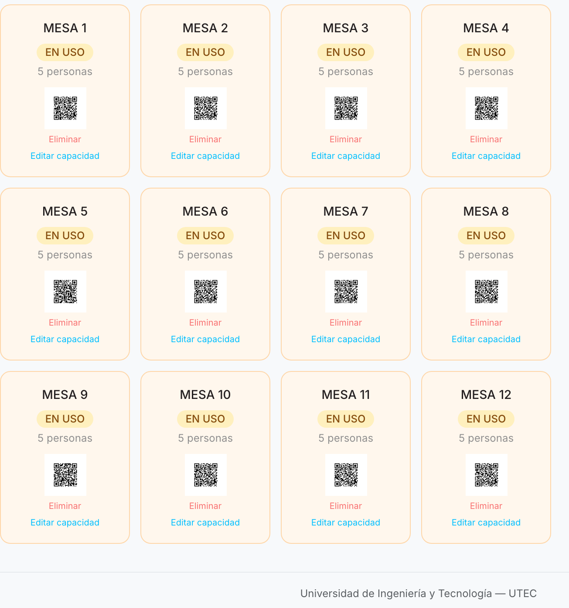
Cada recurso (mesa, PC…) tiene su propio código QR 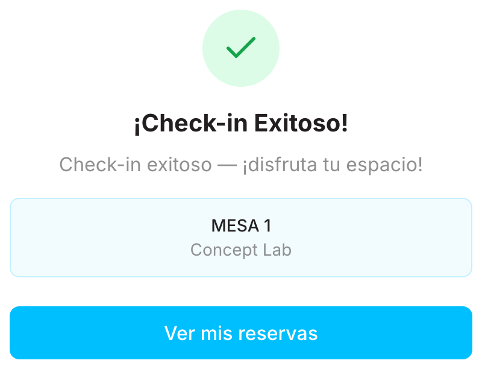
El alumno lo escanea → check-in confirmado
Valida el uso presencial real del laboratorio — no basta con reservar.
Qué decir: Este es el diferenciador. Cada recurso tiene su código QR; el alumno hace check-in y recién ahí la reserva cuenta como uso real. Resuelve el problema de las reservas fantasma que nadie usa.
Términos (por si preguntan):
Check-in : confirmar la asistencia presencial. La reserva pasa a "En curso" solo cuando el alumno llega y escanea.QR : código que se escanea con la cámara. Cada mesa/PC tiene el suyo; la generación del QR exige estar autenticado (no es una imagen pública).Reserva fantasma : la que se aparta pero nadie usa; el check-in permite detectarlas y medir el uso real.
Posibles dudas:
¿Se puede hacer check-in sin estar presente? → La ventana se abre 10 min antes de la hora y el responsable también puede validarlo manualmente.¿Qué pasa si no hace check-in? → Queda registrado como no-asistencia (dato para el dashboard).
Responsable Bloqueos: total o parcial
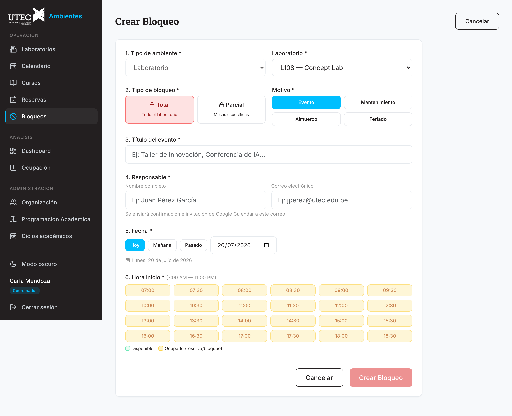
Bloqueo total (todo el lab) 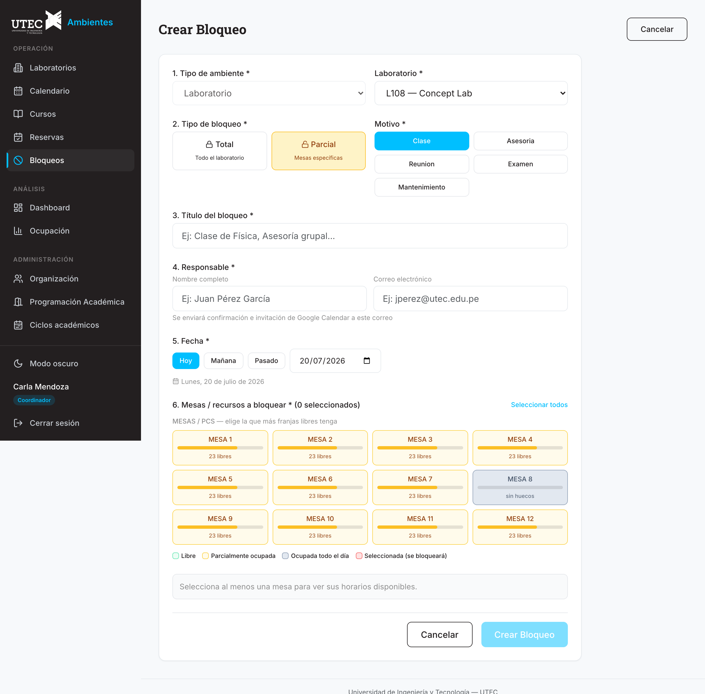
Bloqueo parcial (solo ciertas mesas)
Mantenimiento, evento o clase — con correo automático al responsable.
El responsable puede bloquear el laboratorio completo, por ejemplo para un evento o una clase, o solo ciertas mesas. Todo con correo automático. Sirve para mantenimiento, exámenes y eventos.
Administración Organización y gestión de laboratorios
Estructura académica: Facultades → Departamentos → Laboratorios
Alta y edición de facultades, departamentos y carreras
Gestión de personas y asignación de decanos y directores
Activar / desactivar laboratorios (badge Activo / Inactivo) 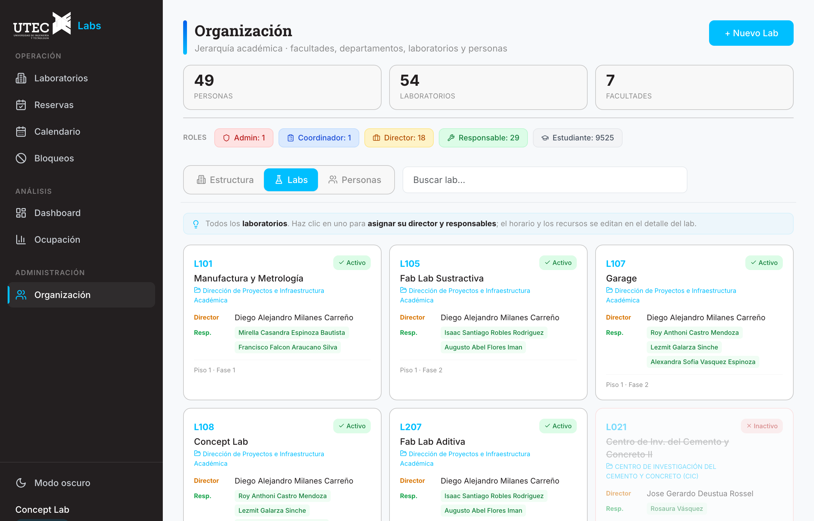
Pestaña "Labs": cada laboratorio Activo o Inactivo
Qué decir: Detrás de las reservas está la organización. El admin o coordinador gestiona toda la estructura académica —facultades, departamentos, laboratorios y personas— que refleja la jerarquía real de UTEC. Y desde aquí se pueden activar o desactivar laboratorios : un lab desactivado deja de aparecer para los alumnos y no acepta reservas, sin perder su información. Útil cuando un lab sale de servicio o aún no está listo.
Términos (por si preguntan):
Activo / Inactivo : estado administrativo del lab. Inactivo = no reservable ni visible para el alumno, pero se conserva su historial y datos.Cascada responsable → director → departamento : al asignar el responsable de un lab, el sistema autocompleta su director y departamento según la estructura real.
Posibles dudas:
¿Desactivar borra el laboratorio? → No, solo lo oculta y bloquea nuevas reservas; se puede reactivar cuando vuelva a estar disponible.¿Quién puede hacerlo? → Admin y Coordinador (gestión total); el Responsable solo gestiona sus propios labs.
Docencia Programación Académica y Ambientes
Importa el horario oficial del ciclo (Excel): crea aulas, cursos, clases y docentes — re-subir no duplica Clases recurrentes con semanas A/B , proyectadas sobre el calendario académico real
Ciclos configurables : fechas, exámenes y feriados (derivados automáticamente)Calendario único para el alumno: clases + eventos + ocupación del lab, y Buscar ambientes libres Bloqueo de aulas y auditorios para eventos
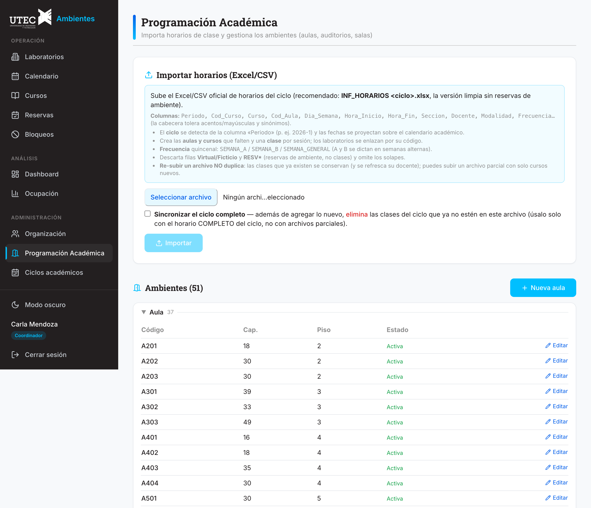
Apartado Programación Académica (Docencia)
Qué decir: El sistema ya no es solo laboratorios: cubre las aulas y el horario académico. El counter de Docencia importa el Excel oficial del ciclo y el sistema arma todo: aulas, cursos, las clases recurrentes con semanas A y B, y hasta las cuentas de los docentes. El alumno ve un calendario único con sus clases, los eventos y la ocupación de cada lab, y puede buscar ambientes libres a una hora dada.
Términos: Semanas A/B = clases quincenales que alternan semana por medio. Ciclo académico = periodo lectivo (2026-1, 2026-2…) con sus fechas configurables.
Operación La capacidad refleja la realidad del campus
Retiro de mesas
Si se llevan mesas por un ciclo, se retiran del sistema: no se reservan, la analítica descuenta su capacidad y no chocan con eventos . Vuelven con un clic.
Cierre institucional
Una sola entrada cierra toda UTEC por un rango (feriado institucional): sin clases, sin reservas en ningún lab, y el dashboard lo descuenta.
Servicios del lab
Cada lab publica sus servicios (FabLab → Impresiones 3D ) con botón Solicitar — el alumno pide en línea, sin reservar mesa, y puede filtrar labs por servicio .
Tres mecanismos para que las cifras del dashboard midan la capacidad real , no la teórica.
Qué decir: Tres capacidades operativas recientes. Uno: si a un lab le retiran mesas físicamente por un ciclo, se retiran también del sistema — no aparecen como reservables y la analítica no castiga al lab por mesas que no tiene. Dos: un feriado institucional se declara una sola vez y cierra toda la universidad. Y tres: los FabLab ofrecen servicios como impresiones 3D — el alumno los solicita en línea con un botón, sin necesidad de reservar una mesa.
Dirección Dashboard ejecutivo
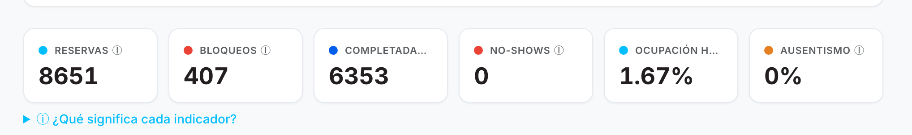
Indicadores clave (KPIs) 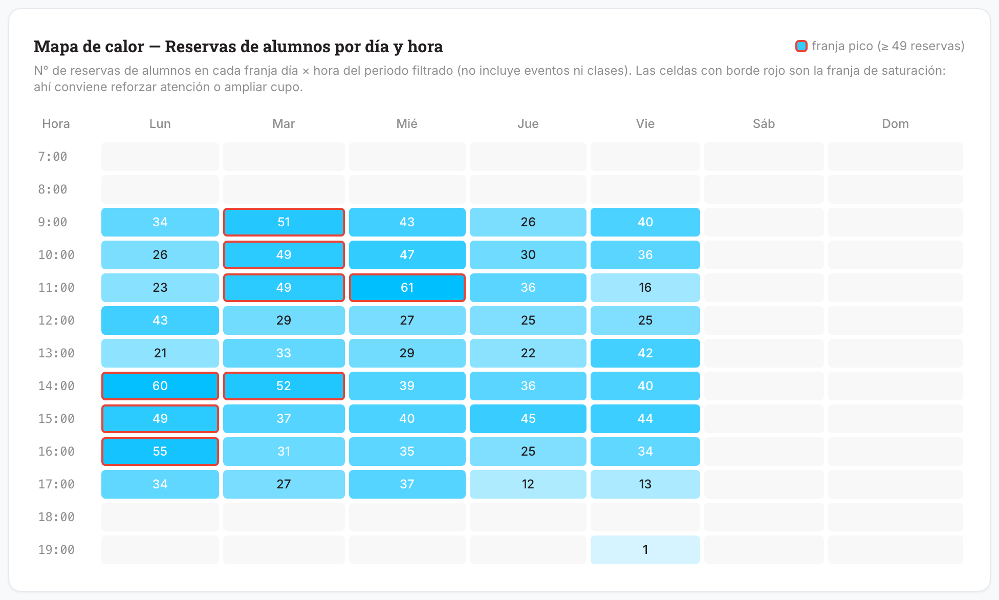
Mapa de calor: intensidad de uso por día y hora → identifica las franjas pico
Qué decir: Aquí está el valor para dirección: los KPIs resumen el estado —reservas, aprovechamiento, ocupación— y el mapa de calor muestra las horas y días de mayor demanda, para decidir cuándo reforzar o abrir espacios. Todo sobre datos reales importados de Affluences.
Términos (por si preguntan):
KPI : indicador clave; una métrica resumen (ej. % de ocupación, ausentismo, total de reservas).Mapa de calor : gráfica que colorea cada franja por intensidad de uso; entre más oscuro/intenso, más demanda. Identifica las horas pico de un vistazo.Affluences : el sistema previo de reservas del cual importamos los datos históricos reales.
Posible duda:
¿Los datos son reales o de ejemplo? → Reales: importados de Affluences. Al operar en vivo se enriquecen con lead time y no-shows.
Dirección Analítica para decisiones
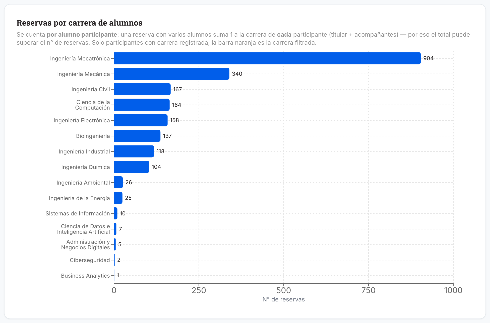
Reservas por carrera 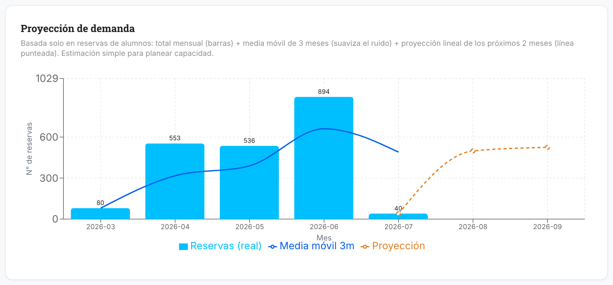
Proyección de demanda (predictivo)
Además: resumen ejecutivo con comparación vs. periodo anterior, vista Uso del lab (OEE) — ocupación con reservas + eventos + clases — y reporte PDF de una hoja.
Qué decir: El dashboard también responde preguntas de gestión: qué carreras usan más los laboratorios —para planificar cupos— y una proyección de la demanda de los próximos meses. Y todo se puede exportar en un reporte ejecutivo de una hoja en PDF.
Términos (por si preguntan):
Reservas por carrera : cuenta por participante (una reserva de varios alumnos suma a varias carreras).Proyección de demanda : estimación de los próximos meses con una regresión lineal sobre el histórico (línea punteada).Resumen ejecutivo : comparación automática contra el periodo anterior (▲/▼) con conclusiones en texto.
Posible duda:
¿La proyección es confiable? → Es una tendencia indicativa sobre los datos históricos; mejora cuando el sistema opere en vivo con más datos.
Automatización Correos automáticos
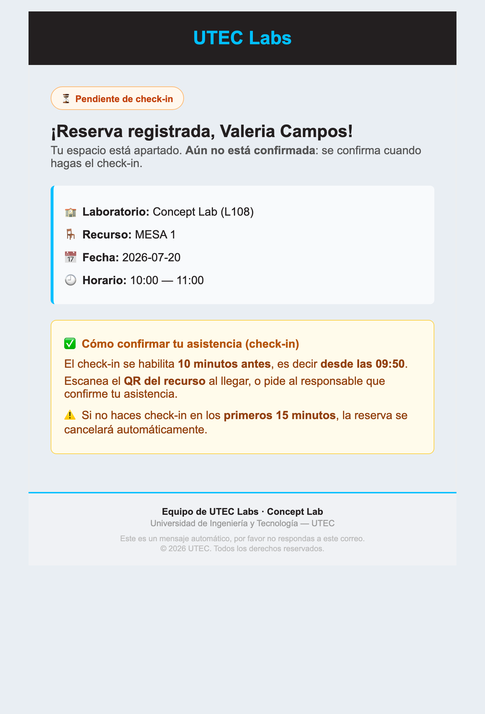
Correo real al reservar
Al reservar (recuerda el check-in)
Al hacer check-in (queda "en curso")
Al bloquear (total/parcial, con recursos)
Envío asíncrono: nunca frena la operación
El sistema notifica solo: al reservar, al hacer check-in y al bloquear. De forma asíncrona, así un fallo de correo nunca frena la operación de negocio.
Momento demo
Veámoslo en vivo
Abrimos la plataforma real y recorremos el flujo completo.
Sugerencia: reservar → check-in QR → bloqueo → dashboard. Alt+Tab para volver a la presentación.
Momento de la demo en vivo. Abro la plataforma real. Recorrido: reservar una mesa y mostrar el correo, hacer check-in por QR, crear un bloqueo, y recorrer el dashboard. Al terminar, Alt+Tab para volver a la presentación.
Parte 02
02
Arquitectura y tecnología
Cómo está construido y documentado el sistema.
Pasamos a la parte técnica: cómo está construido y documentado el sistema.
Sesión técnica Arquitectura del sistema
El navegador (frontend) pide datos a la API (backend); la API aplica la lógica y consulta la base de datos . Redis acelera con caché y RabbitMQ envía los correos en segundo plano. Todo empaquetado en Docker , desplegable donde TI indique.
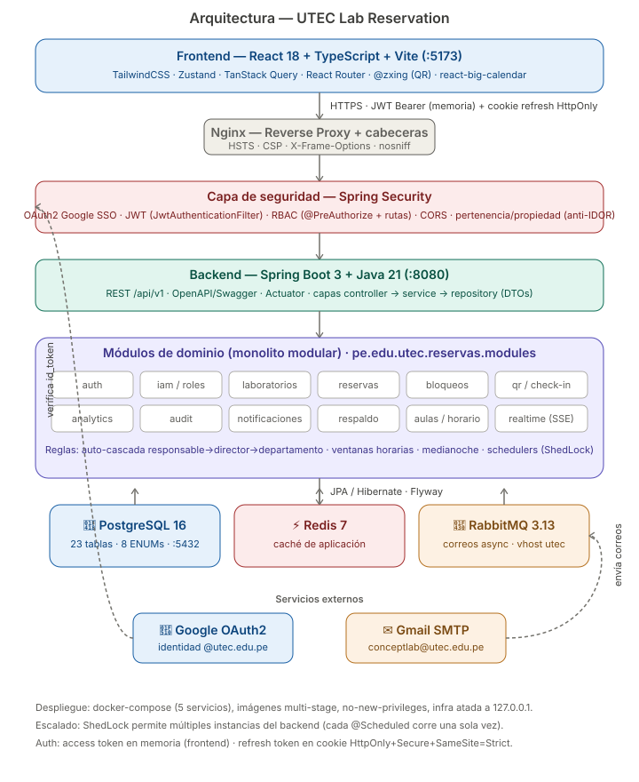
Diagrama de arquitectura (C4 · contenedores)
Frontend
React + TypeScript · lo que ve el usuario
Backend
Java 21 + Spring Boot · lógica y API REST
Datos
PostgreSQL · Flyway versiona el esquema
Apoyo
Redis (caché) · RabbitMQ (correos async)
Auth
Google OAuth2 + JWT (cookie segura)
Deploy
Docker · igual en cualquier servidor
Qué decir: En el frontend, React con TypeScript. En el backend, Java 21 con Spring Boot, una API REST por capas. Base de datos PostgreSQL, con Redis para caché y RabbitMQ para los correos. Autenticación con Google OAuth2 y JWT. Todo en Docker, listo para desplegar donde TI indique.
Términos (por si preguntan):
Frontend : lo que ve el usuario en el navegador. Backend : el servidor con la lógica y los datos.React : librería para construir la interfaz. TypeScript : JavaScript con tipos → menos errores. Vite : compila y sirve el frontend. Tailwind : framework de estilos.Spring Boot : framework de Java para construir el backend. API REST : la forma en que frontend y backend se comunican por HTTP.PostgreSQL : la base de datos (relacional). Redis : memoria caché para acelerar. RabbitMQ : cola de mensajes para tareas en segundo plano (enviar correos sin frenar la operación).Flyway : controla las versiones de la base de datos (los cambios de esquema son ordenados y reproducibles).Docker / Docker Compose : empaqueta la app y sus servicios en "contenedores" para que funcione igual en cualquier servidor.C4 : una notación estándar para dibujar la arquitectura por niveles.
Posibles dudas:
¿Dónde se despliega? → Hoy en local con un túnel para la demo; en Docker, listo para el servidor que ustedes definan.¿Por qué esas tecnologías? → Estándar, maduras, con soporte y comunidad; fáciles de mantener y contratar.¿Se integra con sistemas UTEC? → Ya consume la data de matriculados; abierto a integrar SSO o Google Calendar.
Sesión técnica Casos de uso por rol
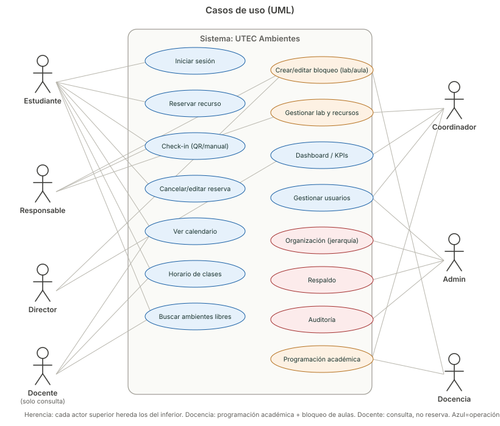
Diagrama de casos de uso — qué puede hacer cada actor (Alt+clic para ampliar) Este diagrama resume formalmente qué puede hacer cada actor del sistema. Está documentado. Puedo ampliarlo con Alt+clic si quieren verlo en detalle.
Sesión técnica Flujo de una reserva
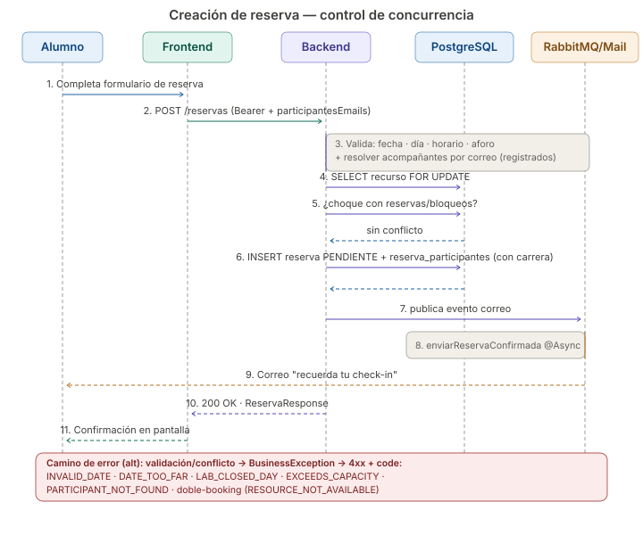
Diagrama de secuencia — reserva con anti-doble-reserva (Alt+clic para ampliar)
Qué decir: Este es el flujo interno de una reserva, con la protección anti-doble-reserva a nivel de base de datos: es imposible que dos personas tomen la misma mesa a la misma hora.
Términos (por si preguntan):
Diagrama de secuencia : muestra, paso a paso y en orden de tiempo, cómo interactúan el usuario, el frontend, el backend y la base de datos en una operación.Anti-doble-reserva : una regla en la propia base de datos (no solo en la app) que rechaza dos reservas solapadas del mismo recurso. Aunque dos personas hagan clic exactamente al mismo tiempo, solo una gana.Concurrencia : varios usuarios operando a la vez; la regla anterior garantiza que no se pisen.
Posible duda:
¿Y si dos reservan la misma mesa al mismo tiempo? → La base de datos rechaza la segunda automáticamente; nunca hay doble reserva.
Sesión técnica Documentación y calidad
16 entregables de ingeniería
Diagramas C4, ERD, clases y secuencia
Documentación de API y matriz de roles
Manual técnico y manuales de usuario (PDF)
CI en GitHub Actions: bloquea si baja la cobertura.
Qué decir: Hay 16 entregables de ingeniería: diagramas, documentación de API, matriz de roles y manuales. En calidad: casi 300 pruebas automatizadas en el backend y 215 en el frontend, con más del 90 y 85 por ciento de cobertura. Integración continua que bloquea si baja la cobertura.
Términos (por si preguntan):
Pruebas automatizadas (tests) : código que verifica solo que cada parte del sistema funcione; se corren en segundos y atrapan errores antes de producción.Cobertura : porcentaje del código que las pruebas ejercitan. 90% backend = casi todo el código está verificado.CI (Integración Continua) / GitHub Actions : en cada cambio, un robot corre todas las pruebas automáticamente; si algo falla o baja la cobertura, no se integra.Diagrama C4 : la arquitectura dibujada en niveles (contexto → contenedores → componentes). ERD : el mapa de las tablas de la base de datos y sus relaciones. API : la lista de operaciones que ofrece el backend.Matriz de roles : tabla de qué puede hacer cada rol.
Posibles dudas:
¿Está documentado para dar mantenimiento? → Sí, 16 entregables + manual técnico + pruebas; facilita la continuidad si cambia el responsable.¿Cómo aseguran que no se rompa al cambiar algo? → Las ~500 pruebas y la CI actúan de red de seguridad en cada cambio.
Sesión técnica Tres manuales de usuario ilustrados
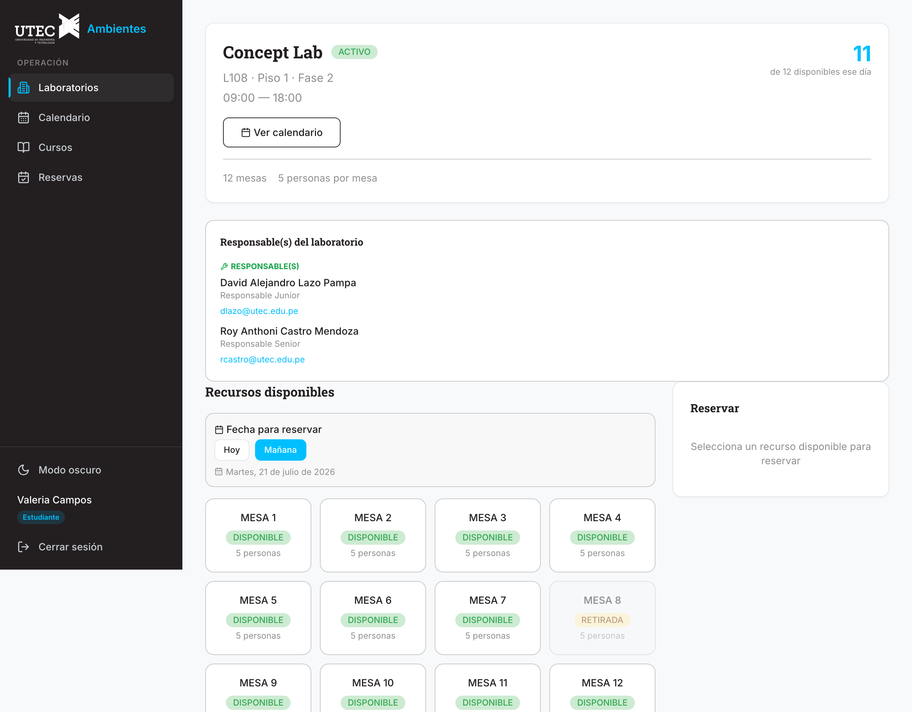
Manual del Alumno
Reservar, check-in, servicios y calendario, paso a paso.
Abrir PDF ▸
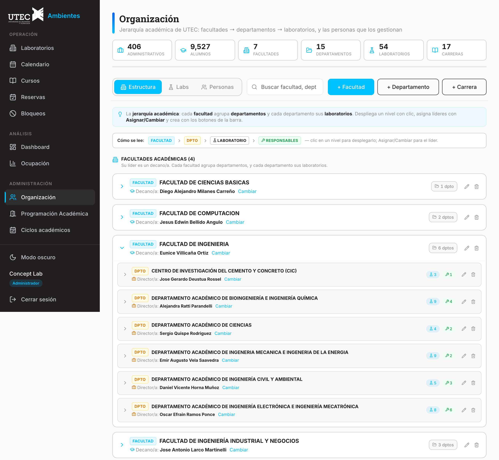
Administrativo de Labs
Guía por rol: recursos, retiros, bloqueos, dashboard y organización.
Abrir PDF ▸
Programación Académica
Docencia y docentes: horarios, aulas, ciclos y su consulta.
Abrir PDF ▸
Preparé tres manuales ilustrados con capturas reales, uno por audiencia: el del alumno; el del administrativo de laboratorios, que empieza con una guía por rol; y el de Programación Académica para Docencia y los docentes. Puedo abrir cualquiera de los tres PDF.
Parte 03
03
Escalabilidad y seguridad
Listo para crecer a toda la universidad, con los datos protegidos.
Cerramos con escalabilidad y seguridad, que son las etapas de evaluación que propuso el equipo de TI.
Evaluación Escalabilidad
9,528
Alumnos reales cargados
Muchos usuarios a la vez : 100, 1000 o 2000+ alumnos simultáneos — sí funciona (un solo servidor ya lo soporta)Paginación + índices : no baja miles de registros de golpe; consultas rápidasShedLock : permite replicar el servidor sin duplicar tareas programadasÚnico punto abierto (NO limita usuarios): sincronizar el "tiempo real" entre varias copias del servidor (fan-out) — mejora para alta disponibilidad
¿Qué es ese "único punto abierto"? El tiempo real : cuando alguien reserva o hace check-in, las pantallas de los demás se actualizan al instante, sin recargar. Hoy funciona en un servidor. Con varias copias del servidor hay que "repartir" ese aviso entre ellas (fan-out). No limita usuarios ni bloquea nada : si no se hace, las pantallas igual se refrescan solas cada cierto tiempo. Es una mejora conocida para alta disponibilidad.
Qué decir: Ya cargamos los más de 9,500 alumnos reales que TI nos compartió. Los listados grandes están paginados, y los procesos programados usan un bloqueo distribuido para escalar a varias instancias. Quiero ser transparente en un punto abierto: el tiempo real, si escalamos a múltiples servidores, necesita un ajuste que ya tenemos identificado.
Términos (por si preguntan):
Paginación : traer los datos de a pocos (página por página) en vez de miles de golpe → la pantalla no se cuelga.Escalar horizontalmente / multi-instancia : correr varias copias del backend en paralelo para atender más usuarios.ShedLock : un "candado" compartido que garantiza que una tarea programada (ej. liberar reservas) corra UNA sola vez aunque haya varios servidores.Índices (base de datos) : estructuras que hacen que las búsquedas sean rápidas incluso con muchos registros.Anti-doble-reserva : regla en la base de datos que impide dos reservas de la misma mesa a la misma hora, incluso con usuarios simultáneos.SSE (Server-Sent Events) : el servidor "empuja" los cambios al navegador en tiempo real, sin tener que recargar.Fan-out : repartir un mismo evento a todas las instancias; es el ajuste pendiente para el tiempo real multi-servidor (se haría con Redis o RabbitMQ, que ya usamos).
Posibles dudas:
¿Cuántos alumnos pueden usarlo a la vez? → Muchos —100, 1000, 2000+— en un solo servidor. La concurrencia la maneja Spring Boot; el límite depende del hardware, no del diseño. Si se necesita más, se replica el servidor.Entonces, ¿qué es el "punto abierto"? → NO es un límite de usuarios. Es que el "empuje en tiempo real" (que refresca las pantallas al instante) hoy funciona bien en un servidor; para que funcione idéntico con VARIAS copias del servidor, falta el "fan-out". Es una mejora para alta disponibilidad, no un bloqueante: sin ella el sistema igual funciona (se refresca por consulta periódica).
Evaluación Seguridad
Google OAuth2 + JWT; refresh en cookie HttpOnly + Secure + SameSite (anti-XSS)
Autorización por rol y por pertenencia; protección anti-IDOR endpoint por endpoint
Tráfico cifrado (HTTPS/TLS) y registro de auditoría de acciones sensiblesSecretos fuera del repositorio · cabeceras HSTS/CSP · actuator protegido · CORS restringido
Abierto a alinear con las políticas y estándares de seguridad de UTEC
Qué decir: Hicimos dos auditorías internas con metodología OWASP: riesgo medio, sin hallazgos críticos ni altos. El token de sesión va en una cookie protegida contra robo, la autorización valida que cada quien solo toque lo suyo, y los secretos están fuera del repositorio. Y algo importante: estamos totalmente abiertos a alinear el sistema con las políticas y estándares de seguridad de UTEC.
Términos (por si preguntan):
XSS (Cross-Site Scripting): ataque que inyecta JavaScript malicioso en la página para robar la sesión del usuario. Nos protegemos guardando el token en una cookie que el JavaScript NO puede leer.IDOR : cuando alguien accede a datos ajenos cambiando un número en la URL (ej. /reservas/5 → /reservas/6). Lo bloqueamos : el servidor verifica que seas el dueño o tengas el rol.OAuth2 : el estándar de "iniciar sesión con Google". Delegamos el login a Google; nosotros no manejamos contraseñas.JWT : un "carné digital" firmado que prueba quién eres en cada petición, sin volver a pedir contraseña.Cookie HttpOnly : cookie que el navegador guarda pero el código de la página no puede leer → a prueba de XSS. Secure : solo viaja por HTTPS. SameSite : solo se envía desde nuestro propio sitio (frena falsificación de peticiones / CSRF).HSTS / CSP : cabeceras de seguridad. HSTS obliga a usar siempre HTTPS; CSP limita de dónde puede cargar scripts el navegador (mitiga XSS).CORS : regla de qué dominios pueden llamar a nuestra API desde el navegador (solo los nuestros).OWASP / CWE : listas estándar de la industria de las fallas más comunes; usamos su metodología para auditar. Risk 28/100 = riesgo medio-bajo.
Posibles dudas:
¿Guardan contraseñas? → No, delegamos en Google OAuth institucional.¿Qué datos sensibles almacenan? → Solo correo institucional, nombre y carrera.¿Quién auditó? → Auditoría interna con herramienta automatizada (metodología OWASP); abierta a su revisión formal.
Cierre Próximos pasos propuestos
1
Sesión técnica con TI: arquitectura, tecnología y documentación
2
Prueba de carga : verificar el sistema con la demanda esperada (usuarios simultáneos y todos los labs) y ajustar la infraestructura a los estándares de UTEC
3
Piloto en los labs de Proyectos e Infraestructura Académica
4
Definir entorno de despliegue e integraciones (SSO institucional)
5
Extensión progresiva al resto de laboratorios de la universidad
Qué decir: Como próximos pasos propongo: la sesión técnica a detalle con su equipo; una prueba de carga; un piloto en los labs de Proyectos e Infraestructura; definir el entorno de despliegue; y de ahí escalar al resto de laboratorios.
Sobre el paso 2 (por si preguntan): "Validación de escalabilidad" = hacer una prueba de carga : simular muchos usuarios usando el sistema a la vez (p. ej. cientos o miles reservando en el mismo momento) y medir que responda bien, sin lentitud ni errores. Con ese resultado se ajusta la infraestructura (memoria, número de servidores, base de datos) a los estándares de TI. Es el paso que confirma, con datos, lo que en diseño ya soporta.
Gracias
David Lazo — Responsable Jr., Concept Lab
dlazo@utec.edu.pe
Eso sería. Muchas gracias por su tiempo. Quedo atento a sus preguntas y comentarios.